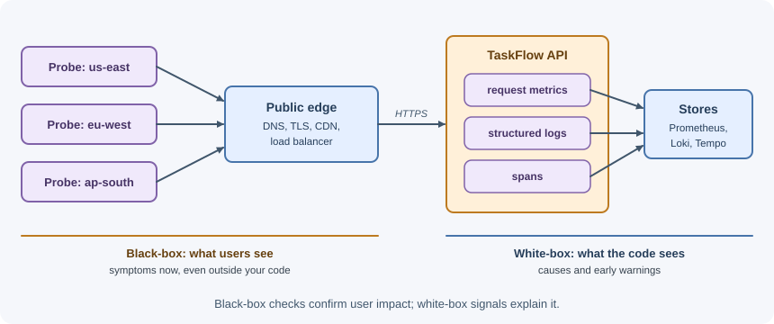

Observability Fundamentals¶
Monitoring tells you when something you anticipated has gone wrong. Observability is the wider ability to ask new questions about a running system, from the outside, without shipping new code to answer them. Both rest on telemetry: the logs, metrics, traces, profiles, and change events that software emits while it runs.
This lesson explains what each signal is good at and what it costs, the standard checklists engineers use to decide what to measure (Google's four golden signals, the RED method, and the USE method), the difference between white-box and black-box monitoring, and a concrete instrumentation plan for TaskFlow API, the Express and MongoDB task service used across this site.
Why it matters¶
Production fails in ways tests never see: a slow disk on one node, a connection pool that fills only at peak, a third-party API that times out for one region, a deploy that doubles memory use. Without telemetry the team learns about these from angry users, then guesses. With good telemetry the team sees the symptom first, follows it to a cause in minutes, and can prove the fix worked.
Telemetry is also how you make decisions with data instead of opinion: whether a release is safe to continue, whether you have capacity for next month's traffic, and whether reliability is good enough to keep shipping features. The cost is real (storage, licences, engineering time, and alert fatigue), so the skill is choosing the right signals, not collecting everything.
Real-world usage¶
- Google SRE (four golden signals). The chapter Monitoring Distributed Systems in Google's Site Reliability Engineering book defines latency, traffic, errors, and saturation as the four signals to measure for a user-facing system if you can measure only four. It also argues for alerting on symptoms rather than causes and for keeping monitoring simple.
- Brendan Gregg (USE method). Gregg's USE Method page describes checking utilization, saturation, and errors for every resource (CPUs, memory, disks, network interfaces, and software resources such as locks and pools) as a fast way to find performance bottlenecks.
- Grafana Labs (RED method). Tom Wilkie's post The RED Method: How to instrument your services proposes measuring rate, errors, and duration for every service, so every service dashboard looks the same and on-call engineers can read any of them.
- OpenTelemetry (signals as a standard). The OpenTelemetry project's Signals documentation defines traces, metrics, logs, and baggage as vendor-neutral signals, and lists profiles as a signal under development. It is the reason instrumentation written today can be sent to almost any backend.
Popular tools and providers: Prometheus, Grafana (with Loki, Tempo, Mimir, and Pyroscope), OpenTelemetry, the Elastic Stack, Jaeger, Datadog, New Relic, Honeycomb, Sentry, Amazon CloudWatch, Google Cloud Observability, and Azure Monitor.
How it works¶
Monitoring compared with observability¶
Monitoring is built from questions you already know to ask: "Is the error rate above 1%?", "Is the disk more than 90% full?". You write the check in advance, and it answers yes or no. That works well for known failure modes.
Observability matters for failures nobody predicted. When POST /tasks is
slow only for users of one tenant whose task lists are huge, no
pre-built dashboard has a "tenants with huge lists" panel. You need
telemetry rich enough (high-cardinality fields such as tenant ID, request
ID, and route on logs and spans) to slice the data in a way you did not
plan.
| Monitoring | Observability | |
|---|---|---|
| Question type | Known in advance ("is X above Y?") | New, exploratory ("what do the slow requests have in common?") |
| Main output | Dashboards and alerts | Ad-hoc queries over rich events |
| Typical data | Aggregated metrics | Structured logs and traces with many fields, plus metrics |
| Good at | Detecting known failure modes cheaply | Explaining novel failures |
| Risk when missing | You find out from users | You know something is wrong but cannot find why |
They are not rivals. Monitoring detects; observability explains. A mature team has a small set of reliable alerts plus telemetry that is good enough to debug what those alerts find.
The signals and what each answers¶
![Diagram: a table of five signals. Logs are one record per event with time, level, message, request id, and fields, and answer "what happened to this request?", for example POST /tasks returned 500 with MongoServerError E11000. Metrics are counters, gauges, and histograms aggregated and cheap to keep, and answer "how much, how fast, is it getting worse?", for example p95 of POST /tasks rose from 80 ms to 400 ms. Traces are spans with parent links across services, and answer "where did the time go, or fail?", for example 320 of 400 ms spent in tasks.find on MongoDB. Profiles are continuous stack samples of CPU and memory, and answer "which function burns the CPU?", for example JSON.stringify of large task lists using 35% CPU. Events are deploys, config changes, flag flips, scaling, and failovers, and answer "what changed just before this?", for example v1.42.0 deployed at 14:02 and errors began at 14:03.](../signals-and-questions.svg)
| Signal | Shape | Strength | Weakness |
|---|---|---|---|
| Logs | One record per event, with a timestamp and fields | Full detail of individual events; easy to add | Volume and cost grow with traffic; hard to aggregate if unstructured |
| Metrics | Numeric time series identified by a name and labels | Cheap to store and query over months; ideal for alerts and trends | Aggregated: cannot tell you about one specific request |
| Traces | A tree of spans (timed operations) for one request across services | Shows where time is spent and how calls relate | Needs context propagation everywhere; usually sampled |
| Profiles | Sampled stack traces of CPU, memory allocation, or locks | Points to the exact function using resources | Language-specific tooling; less mature standards |
| Events | Deploys, config changes, feature flag flips, failovers | Answers "what changed?", the first question in most incidents | Often not recorded at all |
The three core signals are covered in depth in structured logging, metrics and dashboards, and distributed tracing. Profiles are usually collected by a continuous profiler such as Grafana Pyroscope or Parca; OpenTelemetry's profiles signal is still in development. Change events are the cheapest high-value signal: record every deploy with its version and show it on every dashboard.
The signals are most useful when they are linked. A log line carries a
trace_id, a trace carries the same service.name and service.version as
the metrics, and a metric graph can show exemplars (sample trace IDs) for
its slowest points. Linking is what turns three separate tools into one
investigation.
Cost and cardinality¶
Each signal scales differently, which drives most architecture decisions.
- Metrics cost by the number of time series, not by traffic. A counter
incremented a million times a second is still one series. What makes
metrics expensive is cardinality: the number of unique combinations of
label values. Adding a
user_idlabel creates one series per user. - Logs cost by volume: bytes ingested, indexed, and retained. They grow linearly with traffic and with how chatty the code is.
- Traces cost by span count, which is traffic times the number of spans per request, so they are almost always sampled.
A worked estimate for TaskFlow API at 200 requests per second:
Logs: 1 request log line of ~600 bytes per request
200 req/s x 600 B = 120 KB/s
120 KB/s x 86,400 s = ~10.4 GB/day; 30-day retention = ~311 GB
Traces: 10% sampled, ~8 spans per request, ~500 bytes per span
200 x 0.10 x 8 x 500 B = 80 KB/s = ~6.9 GB/day
Metrics: 5,000 active series scraped every 15 s
5,000 / 15 = ~333 samples/s
Prometheus stores roughly 1-2 bytes per sample after compression
333 x 2 B x 86,400 = ~58 MB/day
Double the traffic and logs and traces double; metrics stay the same as long as the label sets do not change. This is why the rule of thumb is: put high-cardinality detail (user IDs, request IDs, task IDs) in logs and spans; keep metric labels to small, bounded sets (method, route template, status class). The cardinality trap is worked through in metrics and dashboards.
The four golden signals¶
Google's SRE book names four signals to watch on every user-facing service:
![Diagram: clients send requests to TaskFlow API, which sends queries to MongoDB with a pool of 10 connections. Four cards surround the API. Latency: how long requests take, measured separately for successes and failures, read as p99 from the duration histogram. Traffic: how much demand arrives, as requests per second per route, read as the per-second rate of http_requests_total over 5 minutes. Errors: how many requests fail, including 5xx, wrong answers, or responses that are too slow, read as the 5xx ratio of all requests. Saturation: how full the service is, starting with the most constrained resource, read as event loop lag and DB pool in use. Latency, traffic, and errors are RED for the service; saturation needs USE-style resource metrics.](../golden-signals.svg)
- Latency: the time to serve a request. Measure successful and failed
requests separately: a fast
500can drag the average down and hide slow successes, while a slow error (a timeout) is worse than a fast one. Use percentiles, not averages. - Traffic: demand on the system, in a unit that fits it. For TaskFlow API it is HTTP requests per second, split by route; for a queue worker it is jobs per second.
- Errors: the rate of failed requests. Count explicit failures
(HTTP 5xx), implicit ones (a
200with the wrong body), and policy failures (a response slower than a committed limit counts as an error if your SLO says so). - Saturation: how "full" the service is, focused on its most constrained resource. For a Node.js API that is often the event loop (one thread) or the MongoDB connection pool, not CPU. Many systems degrade before 100% utilization, so saturation is also about predicting trouble: "the pool will be exhausted at 1.5x today's peak".
The RED method and the USE method¶
The golden signals overlap with two checklists that divide the work by what you are looking at.
RED, for every service or endpoint (request-driven things):
- Rate: requests per second.
- Errors: failed requests per second (or as a ratio of rate).
- Duration: the distribution of request latency, as a histogram.
USE, for every resource (things that have capacity):
- Utilization: the fraction of time or capacity the resource is busy.
- Saturation: the extra work it cannot serve yet, usually a queue.
- Errors: error events for that resource.
| Resource in TaskFlow | Utilization | Saturation | Errors |
|---|---|---|---|
| CPU (container) | CPU seconds used / CPU limit | CFS throttling time, run-queue length | n/a |
| Memory | RSS / memory limit | Swapping, GC time rising | OOM kills |
| Node.js event loop | Event loop utilization (ELU) | Event loop lag | n/a |
| MongoDB connection pool | Checked-out / max pool size | Requests waiting for a connection | Checkout timeouts, pool cleared |
| Disk (database host) | Percent busy | I/O wait queue | I/O errors |
| Job queue | Workers busy / workers | Queue depth, age of oldest job | Failed jobs |
RED tells you that a service is unhealthy as its users experience it; USE tells you which resource is the bottleneck. Build RED dashboards per service and USE dashboards per resource, and link from one to the other.
White-box and black-box monitoring¶

- White-box monitoring uses telemetry emitted from inside the system: metrics, logs, and traces from the code, runtime, and dependencies. It explains why something is happening and can warn early (the pool is at 90% and climbing).
- Black-box monitoring tests externally visible behaviour the way a
user would: an HTTP probe from several regions that requests
https://api.example.com/healthzor runs a login-and-create-task flow. It sees failures that never reach your code, such as an expired certificate, a DNS mistake, or a CDN outage.
The SRE book recommends heavy use of white-box monitoring with modest but critical use of black-box monitoring: black-box tells you a problem is happening now and affecting users; white-box lets you diagnose it and spot problems before they become user-visible. See error tracking and uptime monitoring for synthetic checks.
An instrumentation strategy for TaskFlow API¶
Instrument by layer, starting where users are, and give every signal the same identity attributes so they can be joined later.
| Layer | What to emit | Signal | Tool |
|---|---|---|---|
| Edge | Request logs and status codes at the load balancer or ingress; external probes | Logs, metrics, black-box checks | Load balancer logs, Blackbox exporter or a synthetic service |
| Service (RED) | Request count, errors, duration histogram per route template | Metrics | prom-client or OpenTelemetry metrics |
| Requests | One structured log line per request with request ID and trace ID | Logs | pino and pino-http |
| Call graph | Spans for HTTP server, Express routes, MongoDB, outgoing HTTP, queue publish | Traces | OpenTelemetry auto-instrumentation |
| Runtime (USE) | Event loop lag and utilization, heap, GC, CPU, RSS | Metrics | prom-client default metrics |
| Dependencies (USE) | MongoDB pool checkouts and wait time, queue depth | Metrics | Driver events, queue metrics |
| Business | Tasks created, reminders sent, sign-ups | Metrics | Custom counters |
| Change | Deploys with version and commit, flag flips | Events | CI/CD annotations, a build_info metric |
| Errors | Unhandled exceptions with stack traces and release | Error events | An error tracker such as Sentry |
Three rules keep this coherent:
- One identity everywhere. Every log line, metric, and span carries
service.name(taskflow-api),service.version(the release), and the environment (deployment.environment.namein OpenTelemetry's semantic conventions). This makes "errors by version" a one-line query. - Follow conventions instead of inventing names. Use OpenTelemetry
semantic conventions (
http.request.method,http.route,http.response.status_code) for spans, and Prometheus naming conventions (_totalfor counters, base units such as_secondsand_bytes) for metrics. - Label by route template, never by raw path.
/tasks/:idis one value;/tasks/6650f1...is one value per task and will explode cardinality.
When to use and when not to use¶
Pick the signal that answers the question at the lowest cost:
| Question | Best first signal | Then |
|---|---|---|
| Are users affected right now? | Metrics (error ratio, latency SLO) and black-box probes | Alerts on SLO burn |
| Why did this specific request fail? | Logs filtered by request ID | The linked trace |
| Which service or call added latency? | Traces | Metrics for that dependency |
| Which code path burns CPU or memory? | Profiles | Load test to confirm |
| Did the deploy cause it? | Change events plus metrics split by version |
Roll back, then investigate |
| Is a resource running out? | USE metrics and their trend | Capacity plan |
| What do slow requests have in common? | Structured logs or spans with many fields | Add a metric if it recurs |
When not to reach for more telemetry:
- A single-process side project does not need a tracing backend on day one. Structured logs with request IDs and a handful of metrics go a long way; add tracing when requests cross process boundaries.
- Do not add a metric per user, tenant, or task ID. Put those identifiers in logs and spans.
- Do not keep debug-level logging on in production "just in case"; turn it on temporarily and per component when you need it.
- Do not build a dashboard for every metric. Build dashboards for questions people actually ask during incidents.
Practical examples¶
Runtime and dependency saturation metrics¶
prom-client's default metrics cover the Node.js runtime (event loop lag, heap, GC, CPU, open handles). The MongoDB Node.js driver emits connection pool monitoring events, which make a direct USE metric for the pool.
// src/metrics/runtime.js
import client from "prom-client";
export const register = client.register;
// process_cpu_seconds_total, process_resident_memory_bytes,
// nodejs_eventloop_lag_seconds, nodejs_heap_size_used_bytes, nodejs_gc_duration_seconds, ...
client.collectDefaultMetrics({ register });
const poolInUse = new client.Gauge({
name: "mongodb_pool_connections_in_use",
help: "MongoDB connections currently checked out of the pool",
});
const checkoutFailures = new client.Counter({
name: "mongodb_pool_checkout_failures_total",
help: "Failed attempts to check out a MongoDB connection",
labelNames: ["reason"],
});
// Call once with the shared MongoClient after creating it.
export function instrumentMongoPool(mongoClient) {
mongoClient.on("connectionCheckedOut", () => poolInUse.inc());
mongoClient.on("connectionCheckedIn", () => poolInUse.dec());
mongoClient.on("connectionCheckOutFailed", (event) =>
checkoutFailures.inc({ reason: event.reason })
);
}
reason comes from a small, fixed set defined by the driver (such as
timeout or connectionError), so it is a safe label. Utilization is then
mongodb_pool_connections_in_use / maxPoolSize, and any increase in
mongodb_pool_checkout_failures_total is a saturation error.
Recording deploys as change events¶
Expose the running version as a metric so every graph can be split by release, and post an annotation to Grafana from the deploy pipeline so the deploy appears as a vertical marker on dashboards.
// src/metrics/build-info.js
import client from "prom-client";
new client.Gauge({
name: "taskflow_build_info",
help: "Build information; value is always 1",
labelNames: ["version", "commit"],
}).set({ version: process.env.APP_VERSION ?? "dev", commit: process.env.GIT_SHA ?? "unknown" }, 1);
# deploy step: record the deploy in Grafana (HTTP API, service account token)
curl -sS -X POST "https://grafana.example.com/api/annotations" \
-H "Authorization: Bearer $GRAFANA_TOKEN" \
-H "Content-Type: application/json" \
-d "{\"time\":$(date +%s)000,\"tags\":[\"deploy\",\"taskflow-api\"],\"text\":\"taskflow-api ${APP_VERSION} deployed\"}"
time is in epoch milliseconds. Annotations tagged deploy can then be
shown on every dashboard through an annotation query. A query such as
count by (version) (taskflow_build_info) then shows how many instances
run each version during a rolling deploy.
RED and USE queries for the TaskFlow dashboard¶
# RED: request rate per route
sum by (route) (rate(http_request_duration_seconds_count{job="taskflow-api"}[5m]))
# RED: error ratio (5xx share of all requests)
sum(rate(http_request_duration_seconds_count{job="taskflow-api", status_code=~"5.."}[5m]))
/
sum(rate(http_request_duration_seconds_count{job="taskflow-api"}[5m]))
# RED: p95 duration per route
histogram_quantile(0.95,
sum by (le, route) (rate(http_request_duration_seconds_bucket{job="taskflow-api"}[5m])))
# USE: event loop lag (seconds) and pool utilization (max pool size 10)
max(nodejs_eventloop_lag_seconds{job="taskflow-api"})
max(mongodb_pool_connections_in_use{job="taskflow-api"}) / 10
These assume the request-duration histogram built in
metrics and dashboards; a histogram's _count
series doubles as the request counter, so you do not need a separate one.
A business counter¶
Technical health does not prove the product works. A counter for the core
action catches failures that return 200 but do nothing:
// src/tasks/metrics.js
import client from "prom-client";
export const tasksCreated = new client.Counter({
name: "taskflow_tasks_created_total",
help: "Tasks successfully created",
labelNames: ["source"], // "web" | "mobile" | "api": a bounded set
});
// in the POST /tasks handler, after the insert succeeds:
// tasksCreated.inc({ source: req.get("x-client") === "mobile" ? "mobile" : "web" });
A sudden drop in rate(taskflow_tasks_created_total[10m]) against the same
hour last week is often the first sign of a broken frontend release that
server-side error rates never show.
Best practices¶
- Start from the user: define what "working" means for TaskFlow (tasks can be created and listed quickly), measure that first, then add internals.
- Apply RED to every service and USE to every resource; make all service dashboards look the same.
- Give every signal the same
service.name,service.version, and environment, and put the trace ID in every log line. - Keep metric labels bounded; push identifiers into logs and spans.
- Use histograms and percentiles for latency; never alert on averages.
- Record deploys and configuration changes as events.
- Combine black-box probes (is it working for users?) with white-box telemetry (why not?).
- Monitor the monitoring: alert if Prometheus cannot scrape targets, if log ingestion stops, or if the alerting pipeline itself is down.
- Review telemetry cost monthly; delete dashboards, metrics, and log fields nobody uses.
In production¶
- All dashboards are green while users report errors. Detect: support tickets and social media complaints with no matching spike in server metrics; an external probe would show failures. Cause: only white-box telemetry exists, and the failure is outside the application (expired certificate, DNS change, CDN or load balancer misconfiguration). Fix: add black-box probes from several regions against the public URL, and measure SLIs at the edge (load balancer logs), not only inside the app.
- The metrics backend runs out of memory after a release.
Detect:
prometheus_tsdb_head_seriesjumps at the deploy time and Prometheus memory climbs until it restarts. Cause: a new label with unbounded values, such as the raw URL path or a user ID. Fix: label by route template, drop the offending label withmetric_relabel_configs, and move the identifier into logs or spans. - Average latency looks fine, but users say the app is slow. Detect: p99 latency from the histogram is many times the average, or slow-request logs cluster on certain routes. Cause: averages hide the tail; a few very slow requests (often the biggest customers) disappear in the mean. Fix: chart p50, p95, and p99 from histograms and set SLOs on percentiles or on "fraction of requests faster than X".
- An incident cannot be traced from a user report to the cause.
Detect: engineers grep several services' logs by timestamp and guess.
Cause: no request ID or trace ID is propagated and logged. Fix:
generate or accept a request ID at the edge, propagate W3C trace context,
and log
trace_idon every line. - Monitoring goes down together with the application. Detect: during a cluster or region outage, dashboards and alerts are also unavailable, so the outage is discovered by users. Cause: Prometheus and Alertmanager run on the same cluster they monitor. Fix: run an external watchdog: an always-firing alert whose absence pages (a "dead man's switch"), plus at least one black-box probe hosted outside your infrastructure.
- The log bill doubles overnight. Detect: ingestion volume per service jumps after a deploy. Cause: debug logging left on in production, or a log statement inside a hot loop. Fix: set log levels per environment, sample high-volume success logs, and alert on ingestion volume per service.
Important terminology¶
- Telemetry: Data a system emits about its own behaviour.
- Monitoring: Collecting telemetry and checking it against known conditions, producing dashboards and alerts.
- Observability: How well you can understand a system's internal state from its outputs, especially for questions you did not plan for.
- Signal: A category of telemetry: logs, metrics, traces, profiles, events.
- Cardinality: The number of unique values (or label combinations) a field or metric has.
- Golden signals: Latency, traffic, errors, and saturation.
- RED method: Rate, errors, and duration for each service.
- USE method: Utilization, saturation, and errors for each resource.
- White-box monitoring: Monitoring from internal telemetry.
- Black-box monitoring: Testing external behaviour as a user would.
- Exemplar: A sample trace ID attached to a metric data point, linking the aggregate to a concrete request.
- Semantic conventions: OpenTelemetry's standard names for attributes
such as
http.routeandservice.name.
Common mistakes and misconceptions¶
- Believing observability is a tool you buy. It is a property of the telemetry your code emits; a vendor only stores and queries it.
- Treating "three pillars" as three separate systems with no links between them. Without shared IDs, you cannot move from a metric spike to the failing request.
- Measuring only CPU and memory. Users feel errors and latency; resources are causes, not symptoms.
- Averaging latency, or mixing fast errors with successful requests.
- Using user IDs, emails, or raw URLs as metric labels.
- Assuming that more data is always better. Unused telemetry costs money and slows queries.
- Monitoring from inside the cluster only, so DNS, certificate, and CDN failures are invisible.
- Never recording deploys, which makes "what changed?" the slowest question in every incident.
Revision questions¶
- Explain the difference between monitoring and observability with an example of a failure that monitoring alone would not explain.
- Which signal would you use first to answer "where did the 400 ms go in this request?", and why?
- TaskFlow API serves 500 requests per second and writes one 800-byte log line per request. How much log data is that per day, and per 30 days? (Answer: 400 KB/s, about 34.6 GB per day, about 1.04 TB per 30 days.)
- Why do metrics costs depend on cardinality rather than traffic, while log costs depend on traffic?
- Name the four golden signals and give a TaskFlow measurement for each.
- Apply the USE method to a MongoDB connection pool: what are its utilization, saturation, and errors?
- Give two failures that only black-box monitoring would catch.
- Why should every signal carry
service.version?